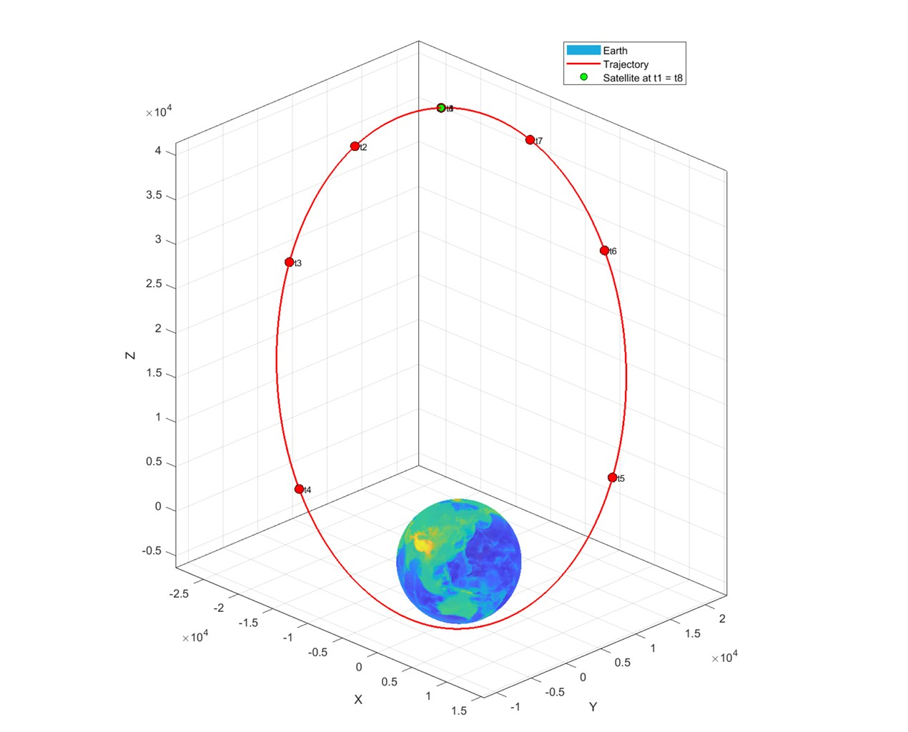

.process-image{
width:100%;
max-width:900px;
height:450px; /* all images same height */
object-fit:cover; /* crops instead of stretching */
display:block;
margin:40px auto;
border-radius:18px;
box-shadow:0 15px 35px rgba(0,0,0,.15);
}
.process-section{
background:white;
padding:50px;
margin:70px 0;
border-radius:22px;
box-shadow:0 12px 30px rgba(0,0,0,.08);
border:none;
}
section{
max-width:1150px;
margin:auto;
padding:110px 30px;
}
h2{
font-size:2.7rem;
margin-bottom:50px;
position:relative;
}
h2::after{
content:"";
display:block;
width:70px;
height:4px;
background:#00a896;
margin-top:15px;
border-radius:5px;
}
.snapshot-card{
transition:.35s ease;
}
.snapshot-card:hover{
transform:translateY(-8px);
box-shadow:0 18px 40px rgba(0,0,0,.12);
}
.download-button,
.deliverable-button{
padding:15px 28px;
font-size:1rem;
border-radius:50px;
box-shadow:0 8px 20px rgba(13,59,102,.18);
}
.download-button:hover,
.deliverable-button:hover{
transform:translateY(-3px);
box-shadow:0 15px 35px rgba(13,59,102,.25);
}
.workflow{
display:flex;
justify-content:space-between;
align-items:center;
flex-wrap:wrap;
gap:20px;
}
.workflow-step{
background:white;
padding:25px;
border-radius:15px;
width:180px;
text-align:center;
box-shadow:0 8px 20px rgba(0,0,0,.08);
}
.overview p{
max-width:900px;
margin:0 auto 25px auto;
font-size:1.08rem;
}
.project-thumb img{
width:100%;
max-width:900px;
height:500px;
object-fit:cover;
border-radius:22px;
box-shadow:0 20px 45px rgba(0,0,0,.18);
}
Two-Body Orbit Analysis
Developed an original MATLAB program to perform classical orbital analysis of an Earth-orbiting satellite. The project calculated orbital elements, ground-station observations, and propagated the orbit using numerical integration to verify orbital motion and conservation of energy.
Project Snapshot
Role
Orbital Mechanics & MATLAB Development
Focus
Classical Orbit Determination
Outcome
Validated orbital propagation and satellite trajectory.
Project Overview
This project developed an original MATLAB program to perform a complete classical orbital analysis from an initial position and velocity vector. The code computed the six classical orbital elements, determined ground-station range, elevation, and azimuth angles, and propagated the satellite's motion using the two-body equations of motion with MATLAB's ODE45 solver.
The propagated trajectory verified conservation of specific orbital energy and angular momentum while producing a three-dimensional visualization of the satellite's orbit. Results were compared across multiple orbital epochs to confirm the expected behavior of an ideal two-body system.
Engineering Process
🛰 Initial Position & Velocity
↓
📐 Compute Orbital Elements
↓
🌍 Ground Station Analysis
↓
💻 Orbit Propagation with ODE45
↓
📈 Validate Results & Visualize Orbit
Project Highlights
Orbit Propagation

A numerical two-body propagator was developed using MATLAB's ODE45 solver to simulate the satellite trajectory over multiple orbital periods. The resulting orbit confirmed the analytical orbital elements and expected elliptical motion.
Ground Station Analysis

Coordinate transformations between the Earth-Centered Inertial (ECI) and South-East-Zenith (SEZ) frames were implemented to compute satellite range, elevation, and azimuth relative to the Boston Air Force Station.
Conservation Verification

Specific orbital energy and angular momentum were monitored throughout the propagation. Both quantities remained nearly constant, verifying the accuracy of the numerical integration and confirming ideal two-body motion.
Project Files
The complete report describes the theoretical development, MATLAB implementation, numerical methods, and validation results. The original MATLAB source code used to generate all calculations and figures is also available.
📄 Final Technical Report
💻 MATLAB Source Code
Technical Skills
MATLAB
Orbital Mechanics
ODE45
Numerical Integration
Coordinate Transformations
Classical Orbital Elements
Satellite Dynamics
Data Visualization
Engineering Takeaways
✔ Developed Original MATLAB Software
Created a MATLAB program to calculate orbital elements, perform orbit propagation, and automate analysis of satellite motion.
✔ Applied Classical Orbital Mechanics
Implemented vector algebra, coordinate transformations, and numerical methods to analyze satellite trajectories.
✔ Verified Numerical Accuracy
Validated conservation of orbital energy and angular momentum while generating three-dimensional orbit visualizations.